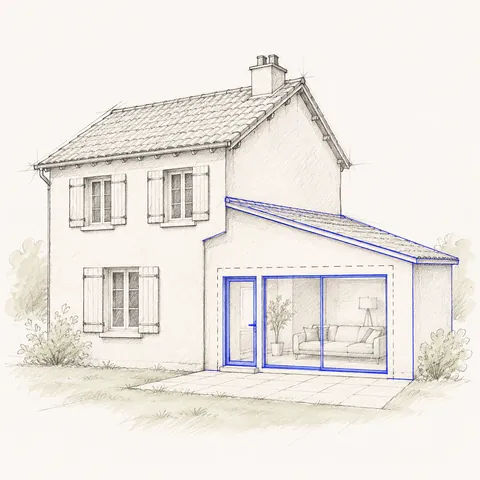

Transformer son garage en pièce : faut-il déclarer ?
Oui, dès que la façade change : remplacer la porte de garage par une fenêtre ou un mur demande une déclaration préalable. Au-delà de 20 m² transformés (40 m² en zone urbaine), il faut un permis de construire.

Quelle démarche pour votre projet ?
| Votre situation | Ce qu'il faut |
|---|---|
| Porte de garage remplacée par une fenêtre ou un mur | Déclaration préalable |
| Plus de 20 m² transformés (40 m² en zone urbaine) | Permis de construire |
| Aucun changement extérieur | En général aucune démarche |
Le plan local d'urbanisme, les règles de votre commune, impose souvent un nombre de places de stationnement : supprimer le garage peut poser problème. On le vérifie avant de dessiner, et si ça ne passe pas, on vous le dit avant de commencer.
Règles générales du code de l'urbanisme. Le plan local d'urbanisme de votre commune peut être plus strict : on le vérifie avec votre adresse avant de dessiner. Sources : Déclaration préalable de travaux · Permis de construire · Travaux à déclarer aux impôts. Mis à jour le 10 novembre 2026.
Ce qu'on vous demandera
Votre projet, sous la forme que vous avez : un croquis à main levée suffit. Vous l'envoyez après le paiement, depuis votre téléphone, avec un guide pas à pas.
- Le projetCe que devient le garage (chambre, bureau…) et ce qui remplace la porte de garage
- Les mesuresLes dimensions intérieures du garage
- Les photosTrois photos : la façade du garage, l'intérieur, la maison vue de la rue
Ce qu'on fait pour vous
D'abord, on étudie en entier le plan local d'urbanisme qui s'applique à votre terrain : le règlement de votre zone, les chapitres communs, le lexique, les protections. Distances aux voisins, hauteur, emprise, clôtures, couleurs : votre projet est confronté à chaque règle. Si votre projet ne passe pas tel quel, on vous le dit avant de commencer, avec la règle qui bloque : vous décidez de ce que vous changez. Ensuite on trace à l'échelle, d'après votre croquis et vos mesures, tous les plans demandés par la mairie, et on remplit le formulaire officiel. Une deuxième personne relit tout. Vous n'avez plus qu'à déposer, ou on dépose pour vous.
Faut-il déclarer la transformation aux impôts ?
Oui. Un garage qui devient une pièce de vie change la nature du bien : la transformation se déclare aux impôts dans les 90 jours après la fin des travaux, depuis votre espace impots.gouv.fr, rubrique « Biens immobiliers ».
La base de calcul de la taxe foncière est alors revue. Sans déclaration dans le délai, l'amende est de 150 €.
Que risque-t-on sans déclaration ?
Construire sans autorisation est un délit. Pendant 6 ans après les travaux, une amende est possible, de 1 200 € à 300 000 € selon le cas.
Le problème ressort surtout à la vente : le notaire relève les surfaces jamais déclarées, et l'acheteur ou sa banque peut demander que ce soit réglé avant de signer. Une régularisation reste possible à tout moment, si la construction respecte les règles actuelles de votre commune.
Les erreurs qui bloquent une transformation de garage
- Oublier le stationnement. Beaucoup de communes imposent un nombre de places par logement : supprimer le garage sans place de remplacement fait refuser le dossier.
- Croire qu'il n'y a rien à déclarer parce que les travaux sont à l'intérieur. Dès que la porte de garage est remplacée, la façade change et la déclaration est obligatoire.
- Ne pas compter la surface créée. Le garage ne comptait pas dans la surface de plancher : une fois transformé, il s'y ajoute, et peut faire passer la maison au-dessus de 150 m².
- Dessiner la nouvelle façade sans les dimensions de la fenêtre ni les matériaux. La mairie réclame la pièce et le délai repart.
- Créer un logement indépendant sans le dire. Un studio à louer n'est pas une chambre en plus : les règles de la commune peuvent être différentes.
Questions fréquentes
Est-il possible de transformer un garage en chambre sans autorisation ?
Non, dès que la façade change. Remplacer la porte de garage par une fenêtre ou un mur demande une déclaration préalable. Sans aucun changement extérieur, il n'y a en général pas de démarche d'urbanisme, mais la déclaration aux impôts reste due.
Quel permis pour transformer un garage en habitation ?
Une déclaration préalable jusqu'à 20 m² transformés, et jusqu'à 40 m² en zone urbaine d'un plan local d'urbanisme. Au-delà, un permis de construire.
Est-il possible de transformer son garage en chambre ?
Oui, si le plan local d'urbanisme de votre commune le permet. Le point à vérifier d'abord est le stationnement : la commune peut exiger de garder une place sur le terrain.
Chambre, studio, buanderie, salle de sport : la démarche est-elle la même ?
Oui pour l'urbanisme : c'est le changement de façade et la surface transformée qui comptent, pas l'usage de la pièce. Un studio destiné à la location crée en revanche un logement de plus, ce que certaines communes encadrent.
Faut-il déclarer la transformation aux impôts ?
Oui, dans les 90 jours après la fin des travaux, depuis votre espace impots.gouv.fr. La base de calcul de la taxe foncière est revue.
Quel risque si la transformation n'est pas déclarée ?
C'est un délit. Pendant 6 ans après les travaux, une amende est possible, de 1 200 € à 300 000 € selon le cas. À la vente, le notaire peut relever le problème et l'acheteur demander une régularisation avant de signer.
Quel est le délai de réponse de la mairie ?
Un mois pour une déclaration préalable, à partir d'un dossier complet. En général deux mois en secteur protégé. La mairie a un mois pour réclamer une pièce manquante, et le délai ne court qu'une fois le dossier complet.
Si la mairie dit non à cause de nous, on reprend tout, sans frais.
Un refus ou une pièce manquante à cause d'une erreur dans le dossier ? On corrige et on redépose, sans rien vous facturer.